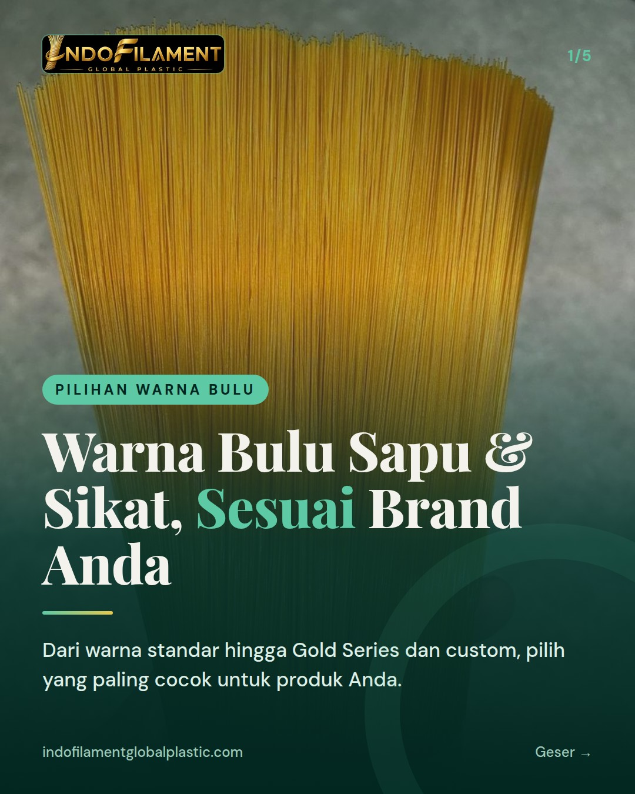
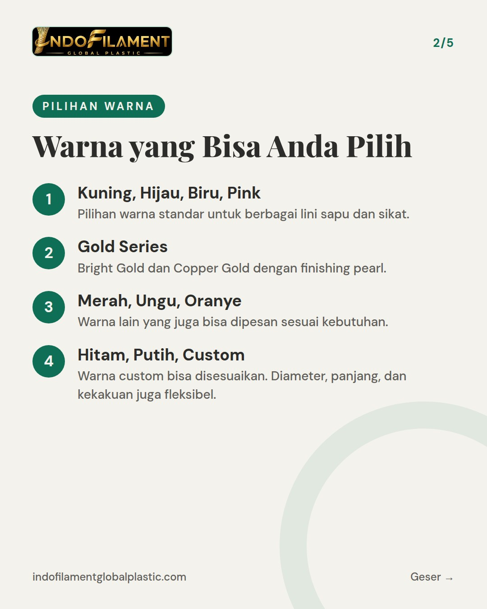
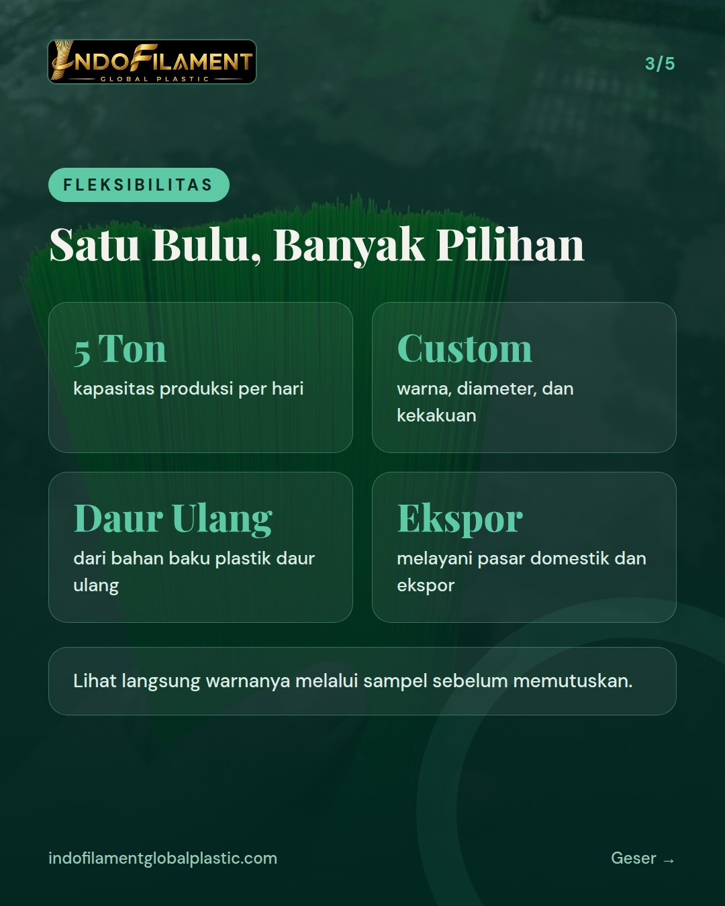
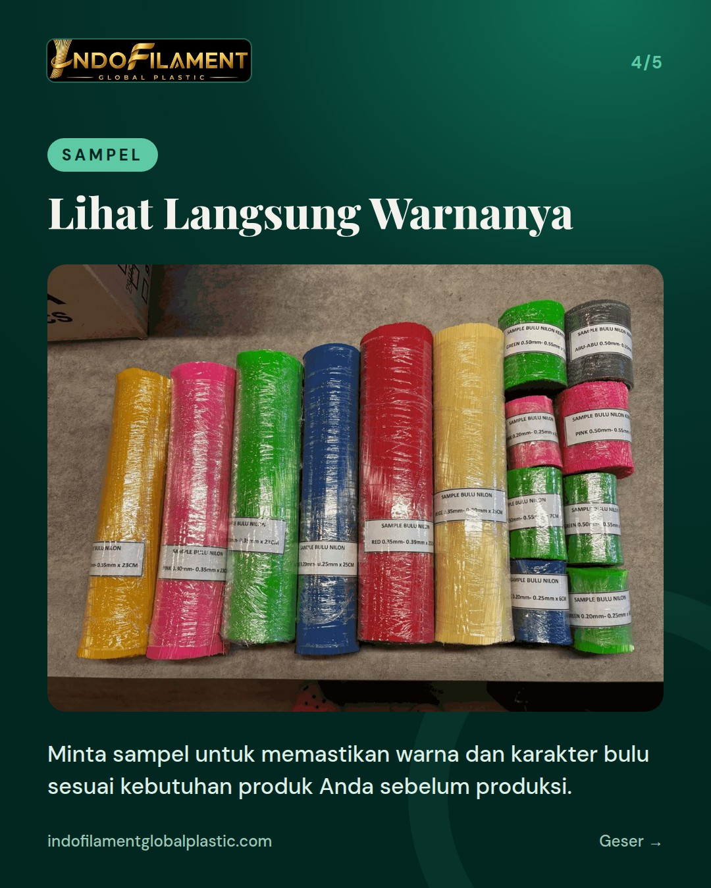
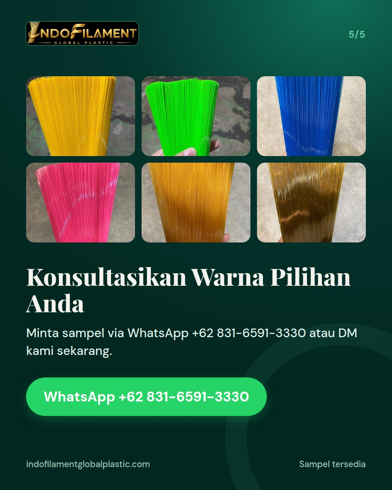

Pilihan warna bulu sapu dan bulu sikat: kuning, hijau, biru, pink, Gold Series, dan custom





Warna bukan sekadar tampilan. Warna yang tepat bisa membuat produk Anda lebih mudah dikenali di rak. 🌈 Di Indofilament, bulu sapu dan bulu sikat kami tersedia dalam warna kuning, hijau, biru, dan pink. Ada juga Gold Series dengan pilihan Bright Gold dan Copper Gold yang berfinishing pearl. Untuk warna merah, ungu, oranye, hitam, putih, atau warna custom, silakan konsultasikan kebutuhan Anda. Diameter, panjang, dan kekakuan juga bisa disesuaikan. Bahan utamanya nilon dari bahan baku plastik daur ulang, jadi tetap ramah lingkungan. Mau melihat warnanya langsung? Minta sampel via WhatsApp +62 831-6591-3330 atau DM kami. ✨ Pabrik kami di Tangerang juga terbuka untuk kunjungan. For international buyers: We offer filament in yellow, green, blue, pink, and Gold Series (Bright Gold & Copper Gold), plus red, purple, orange, black, white, and custom colors. Request samples anytime. #bulusapu #bulusikat #filamen #pabriksapu #madeinindonesia #broomfilament #brushfilament #warnabulusapu #goldseries #ramahlingkungan